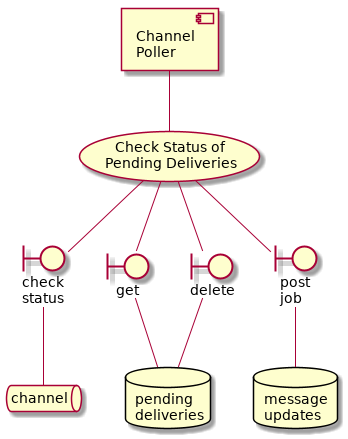
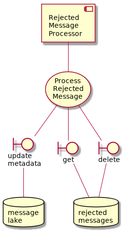

Outbound Message Flow¶
These components are involved in the flow of messages from one Government to another. Specifically, the sending side of the equation.
Multichannel Router¶
This is a core component. It is responsible for routing messages between Governments (using the appropriate channel).
Note: channels abstract over topology, technology and wire protocols. This means that countries are free to determine bilaterally or multilaterally agreeable channels. This component will be configured to use the channels as per the operating countries agreements.
![@startuml
component router [
Multi-Channel
Router
]
usecase uc [
Route To
Channel
]
router -- uc
queue ch1 [
channel 1
]
queue ch2 [
channel 2
]
queue chx [
channel ...
]
boundary rt [
routing
table
]
uc -- rt
rt -- ch1
rt -- ch2
rt -- chx
database outbox [
delivery
outbox
]
boundary outbox_patch [
patch
message
]
outbox_patch -- outbox
router -- outbox_patch
boundary outbox_get [
get
message
]
router -- outbox_get
outbox_get -- outbox
boundary post_pcm [
post
job
]
router -- post_pcm
database pcm_repo [
channel
pending
]
post_pcm -- pcm_repo
boundary push_mu [
patch
]
router -- push_mu
database mu_repo [
delivery
status
]
push_mu -- mu_repo
@enduml](_images/plantuml-edcd6375f018de6b6b5214695c596a43e33da651.png)
This process needs to be slightly more complicated than it might seem at first. Channels need to be potentially asynchronous. For example, with a blockchain channel, messages are “written” to the extent of the consensus. It’s technically possible for blockchains to fork, meaning that the concensus “changes it’s mind” about the shared view of history.
This means that, in addition to routing the message to the channel, the router must also dispatch a couple of jobs (asynchronous processing tasks):
“Channel Pending” jobs are used keep track of messages that may not yet have been sucessfully delivered by the channel. Depending on the outcome of channel processing, the appropriate steps for processing these messages may not yet be known.
“Delivery Status” journal is updated to keep track of the channel delivery status so stakeholder processes can remain appraised of important delivery/non-delivery events.
Channel Poller¶
Not to be confused with the Channel Observer: This worker checks on the status of messages that have been sent to a channel BY US (the other one discovers new messages that have been sent on a channel TO US).

This worker deletes jobs from the “pending messages” queue when an change is detected (by polling the channel). If no change is detected, the job is not deleted from the pending messages queue. But neither is it returned to the queue - the worker holds a lock on the job until it goes stale. This way, the worker polls the queue sequentially at most once per task timeout period configured on the queue.
It’s a bit of a cheap trick but it seems to work quite well.
Rejected Message Processor¶
When the multi channel router tries to send a message to a channel, there are various reasons why the attempt might fail. Because the process is asynchronous, the sending component (multi channel router) does not wait to know the status, it just carries on sending.
That is why the channel poller component manages data in the “pending deliveries” database and posts update jobs to the “message updates” queue. Thus, message updates queue contains jobs to be done updating the delivery status of messages.
The task of this component (rejected message processor) is to process those jobs.
-
class
intergov.processors.rejected_status_updater.RejectedStatusUpdater(rejected_message_repo_conf=None, message_lake_repo_conf=None)[source]¶ Iterate over RejectPendingMessageUseCase

-
class
intergov.use_cases.reject_pending_message.RejectPendingMessageUseCase(rejected_message_repo, message_lake_repo)[source]¶ Gets a single message from rejected message repo If rejected message payload is valid - has sender, sender_ref fields updates message metadata by changing status to rejected via message lake repo update_metadata method
- Fails if:
unable to update message status
rejected message payload is invalid